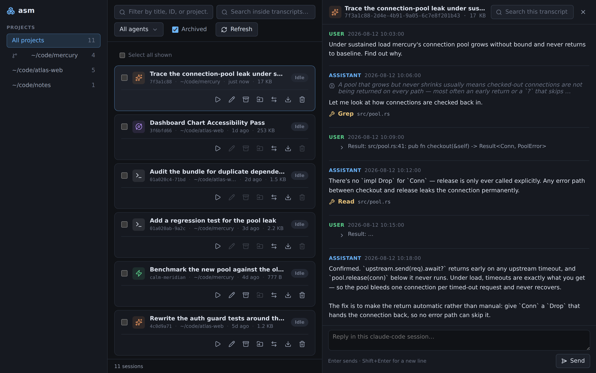
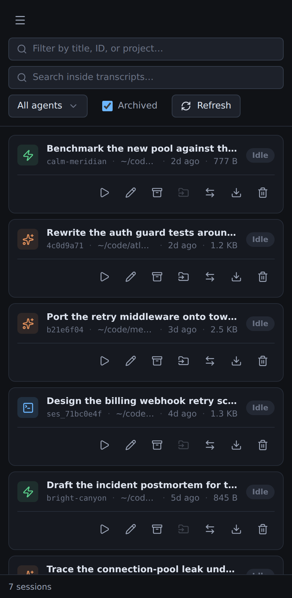

Coding agents are good at keeping their own history and bad at everything around it. asm reads the stores they keep for themselves, lists every session in one place, and carries a conversation from one agent into another.
curl -fsSL https://raw.githubusercontent.com/samishal1998/agent-sessions-manager/main/install.sh | sh
Single self-contained binary · Linux and macOS · x86_64 and arm64
Each agent invented its own on-disk format and its own idea of what a session is. None of them can see the others, so there is no list, no search, and no way back into a conversation you started somewhere else.
Append-only JSONL per session, in a directory named by a lossy encoding of your working directory. Five sidecar locations across two roots.
~/.claude/projects/…/<uuid>.jsonlOne SQLite database for everything, with a live write-ahead log — copy it wrong and you silently read stale data.
~/.local/share/opencode/opencode.dbA whole-conversation JSON snapshot rewritten on every turn, alongside a journal and a backup of the previous state.
~/.jcode/sessions/session_<name>.jsonSessions from every agent, grouped by the repository they belong to, with the disk each one costs.
$ asm list AGENT ID TITLE PROJECT BRANCH UPDATED SIZE STATUS jcode calm-meridian Benchmark the new pool against the old one ~/code/mercury 2d ago 777 B idle claude-code 4c0d9a71 Rewrite the auth guard tests ~/code/atlas-web main 2d ago 1.2 KB idle claude-code b21e6f04 Port the retry middleware onto tower::Layer ~/code/mercury-tls tls-rewrite 3d ago 2.5 KB idle opencode ses_71bc Design the billing webhook retry schema ~/code/atlas-web 4d ago 1.3 KB idle jcode bright-canyon Draft the incident postmortem ~/code/notes 5d ago 845 B idle claude-code 7f3a1c88 Trace the connection-pool leak under load ~/code/mercury main 6d ago 4.2 KB idle opencode ses_9d2a Migrate the dashboard build to Vite 7 ~/code/atlas-web 7d ago 927 B archived $ asm projects PROJECT AGENTS SESSIONS SIZE WORKTREES UPDATED ~/code/mercury claude-code, jcode 3 7.4 KB 2/2 2d ago ~/code/atlas-web claude-code, opencode 3 3.5 KB 2d ago ~/code/notes jcode 1 845 B 5d ago
asm serve puts the same verbs behind a mouse — filters, full-text search,
and a transcript panel that renders reasoning, tool calls and their output.

Everything runs locally. Nothing is uploaded anywhere.
One set of verbs, applied to whichever agent happens to own the session.
Every session from every agent in one table, with title, project, branch, model, size and whether it is running right now.
One index across every transcript, whatever wrote it, with highlighted snippets and the message each hit came from.
Not directories. A repository's worktrees and subdirectories are one project, so a session started in a checkout is not a separate thing.
Retitle a session you can no longer identify. Move one after you renamed the directory. Archive what you are done with, and bring it back.
Carry a conversation from one agent to another as a native session the target's own picker lists and its own resume opens.
Every destructive verb writes a backup first, and refuses outright on a session whose process is still alive.
The flagship. asm import converts through a documented, versioned
intermediate representation and writes a native session in
the target — not an export file, but a real session the target lists and resumes.
$ asm import 36405fad --to opencode Imported as opencode:ses_7bdfed0f167b6c50. Loss report: 2 of 3 messages converted 1 opaque reasoning block dropped (provider-bound; summaries only) conversation re-attributed to openai/gpt-5.6-sol Resume with: opencode -s ses_7bdfed0f167b6c50

The same operations wherever you are: a CLI that pipes, a terminal UI where every verb is a keystroke, and a local web UI that works down to a phone.
asm doctorVerified means a real session was changed, then the agent's own CLI still listed and resumed it.
| Claude Code | OpenCode | jcode | |
|---|---|---|---|
| List, show, search | ✓ | ✓ | ✓ |
| Resume natively | ✓ | ✓ | ✓ |
| Rename | ✓ | ✓ | ✓ |
| Archive · unarchive | ✓ | ✓ | ✓ |
| Delete, with backup | ✓ | ✓ | ✓ |
| Move to another project | ✓ | ✓ | — |
| Import into | ✓ | ✓ | — |
| Export to IR | ✓ | ✓ | ✓ |
| tested against | 2.1.234 | 1.17.18 | 0.78.0 |
One binary, no runtime. SQLite is bundled and the web UI is embedded.
Downloads the build for your platform, checks it against the release's
SHA256SUMS, and installs to ~/.local/bin. A bad
download stops before anything is written.
curl -fsSL https://raw.githubusercontent.com/samishal1998/agent-sessions-manager/main/install.sh | sh
Needs a recent stable Rust, and Bun or Node to build the embedded web assets first.
git clone https://github.com/samishal1998/agent-sessions-manager cd agent-sessions-manager/crates/asm-web/frontend bun install && bun run build && cd - cargo build --release
| Variable | Effect |
|---|---|
| ASM_VERSION | Install a specific tag instead of the latest release. |
| ASM_INSTALL_DIR | Where the binary goes. Defaults to ~/.local/bin. |
| ASM_BASE_URL | Fetch the assets from a mirror or a local directory instead of GitHub. |
asm edits stores that other programs own. The rules that follow from that are not optional.
Every mutation checks whether the owning process is still running, and refuses if it is.
Destructive verbs write a copy first. Delete backs up the transcript and its sidecars together.
Nothing leaves your machine. The web UI binds to loopback and refuses cross-origin mutations.
Search is a derived cache that can be deleted and rebuilt. The agents' own files stay the source of truth.